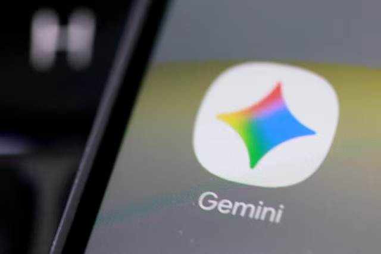

Ciberataque a Booking, control de edad en internet y nuevas medidas contra el spam

La noticia sobre el ciberataque a Booking.com, junto con el control de edad en internet y las nuevas medidas contra el spam, muestra cómo están evolucionando los derechos digitales en la actualidad. En el caso del ataque, se produjo un acceso no autorizado a datos de usuarios, como información de contacto y detalles de reservas; aunque no se filtraron datos bancarios, el principal riesgo es el phishing, ya que los ciberdelincuentes pueden usar esos datos para enviar mensajes falsos y engañar a las personas. Además, se menciona que la Unión Europea está desarrollando un sistema para verificar la edad de los usuarios en internet sin comprometer su privacidad, con el objetivo de proteger especialmente a los menores, y que España será uno de los primeros países en probarlo. Por otro lado, también se plantea una nueva medida contra el spam telefónico, que consistirá en obligar a que las llamadas comerciales utilicen un prefijo específico (400), permitiendo a los usuarios identificarlas fácilmente y evitar fraudes. En mi opinión, esta noticia refleja claramente que la tecnología no solo avanza en innovación, sino también en riesgos, ya que hoy en día no es necesario robar datos financieros para cometer estafas, sino que basta con información básica para manipular a las personas. Al mismo tiempo, las soluciones propuestas van en buena dirección, pero generan dudas sobre su efectividad real y el equilibrio entre seguridad y privacidad, lo que demuestra que la regulación digital será cada vez más importante en el futuro.
Mythos, el nuevo modelo de IA de Anthropic genera preocupación mundial
La empresa Anthropic presentó Mythos Preview, un nuevo modelo de inteligencia artificial diseñado para identificar vulnerabilidades informáticas con gran rapidez y precisión. Según expertos en ciberseguridad, esta tecnología tiene la capacidad de analizar sistemas complejos y detectar fallos que podrían pasar desapercibidos para los métodos tradicionales. Sin embargo, el lanzamiento también ha generado preocupación entre gobiernos y especialistas, ya que una herramienta tan poderosa podría utilizarse tanto para fortalecer la seguridad informática como para encontrar vulnerabilidades que luego sean explotadas por actores malintencionados. Debido a estos riesgos, el acceso a Mythos Preview ha sido limitado a determinadas organizaciones tecnológicas y entidades gubernamentales. Este caso refleja cómo el desarrollo de la inteligencia artificial está avanzando a gran velocidad y plantea nuevos desafíos relacionados con la seguridad digital. A medida que estas herramientas se vuelven más sofisticadas, también aumenta la necesidad de establecer normas y mecanismos de control que garanticen un uso responsable y seguro de la tecnología.
Google presenta Gemini 3 y acelera la competencia en Inteligencia Artificial

Durante el mes de abril de 2026, Google anunció Gemini 3, una nueva generación de modelos de inteligencia artificial diseñada para mejorar las capacidades de razonamiento, análisis de información y asistencia en tareas complejas. Este lanzamiento representa un paso importante en la evolución de la IA y fortalece la competencia entre las principales empresas tecnológicas que desarrollan este tipo de herramientas. Gemini 3 incorpora mejoras en el procesamiento del lenguaje natural, la comprensión de contextos más extensos y la generación de respuestas más precisas. Estas características permiten que la inteligencia artificial sea utilizada en áreas como la educación, la programación, la investigación y la productividad empresarial. El avance de modelos como Gemini 3 demuestra cómo la inteligencia artificial está transformando la manera en que las personas interactúan con la tecnología. Sin embargo, también surgen interrogantes sobre la privacidad de los datos, el uso responsable de la información y el impacto que estas herramientas podrían tener en distintos sectores laborales en el futuro.
Microsoft alerta sobre 8.300 millones de ataques de phishing impulsados por códigos QR y CAPTCHA

Microsoft informó que durante los primeros meses de 2026 se detectaron más de 8.300 millones de intentos de phishing a través del correo electrónico. Según los especialistas de la compañía, los ciberdelincuentes están utilizando nuevas estrategias para engañar a los usuarios, entre ellas códigos QR maliciosos y sistemas CAPTCHA falsos que aparentan ser mecanismos legítimos de seguridad. Estas técnicas buscan obtener credenciales de acceso, información personal y datos sensibles de los usuarios. Los ataques son cada vez más sofisticados y aprovechan la confianza de las personas en herramientas que normalmente consideran seguras. Microsoft destacó la importancia de fortalecer la educación digital y las medidas de protección para reducir el impacto de estas amenazas, que continúan creciendo a nivel mundial.
OpenAI presenta Daybreak, una nueva iniciativa de ciberdefensa basada en Inteligencia Artificial

OpenAI anunció el lanzamiento de Daybreak, un programa de ciberdefensa diseñado para ayudar a empresas y organizaciones a detectar vulnerabilidades, revisar código y fortalecer la seguridad de sus sistemas mediante el uso de inteligencia artificial avanzada. La iniciativa busca anticiparse a posibles amenazas digitales y mejorar la capacidad de respuesta ante incidentes de seguridad. Para ello, emplea modelos de inteligencia artificial capaces de analizar grandes volúmenes de información y detectar posibles riesgos de manera más eficiente. El proyecto refleja cómo la inteligencia artificial está siendo utilizada no solo para automatizar tareas, sino también para proteger infraestructuras tecnológicas críticas y reforzar la seguridad digital en diferentes sectores.
Google incorpora agentes de IA al comercio electrónico y transforma la experiencia de compra online

Durante el evento Google Marketing Live 2026, Google presentó una nueva generación de herramientas de inteligencia artificial orientadas al comercio electrónico. Entre las novedades destacan asistentes de compra impulsados por Gemini, capaces de ayudar a los usuarios a encontrar productos, comparar opciones y recibir recomendaciones personalizadas según sus necesidades. Estas nuevas funciones buscan convertir la experiencia de compra en un proceso más conversacional e inteligente. Gracias a la inteligencia artificial, los usuarios pueden obtener sugerencias más precisas, realizar búsquedas más eficientes y descubrir productos relevantes de manera más rápida que con los métodos tradicionales. La integración de agentes de IA en las plataformas de comercio electrónico representa un cambio importante en la forma en que las empresas interactúan con los consumidores. Además, demuestra cómo la inteligencia artificial está dejando de ser una tecnología experimental para convertirse en una herramienta práctica que mejora la experiencia de compra digital.
Samsung presenta One UI 9 con una experiencia de usuario renovada

Samsung anunció One UI 9, la nueva versión de su capa de personalización basada en Android 17. Entre las principales novedades destacan cambios visuales orientados a mejorar la experiencia del usuario, incluyendo widgets rediseñados, una interfaz más limpia y una navegación más intuitiva. La actualización busca facilitar la interacción con el dispositivo mediante elementos visuales más modernos y accesibles. También incorpora mejoras en la organización de aplicaciones, accesibilidad y personalización de la experiencia móvil. Estas novedades reflejan la importancia del diseño UI/UX en el desarrollo de productos digitales, donde la facilidad de uso y la experiencia del usuario son factores clave para el éxito de una aplicación o sistema.
LoRa Alliance presenta una hoja de ruta global para expandir el Internet de las Cosas

La organización internacional LoRa Alliance anunció una nueva hoja de ruta tecnológica para impulsar el crecimiento global de LoRaWAN, una de las principales tecnologías de comunicación utilizadas en proyectos de Internet de las Cosas (IoT). El plan contempla nuevas funcionalidades que facilitarán la integración de dispositivos inteligentes en sectores como ciudades inteligentes, agricultura, logística, industria y monitoreo ambiental. Además, busca simplificar la conexión de sensores y dispositivos mediante mecanismos más eficientes y compatibles con diferentes plataformas. Entre los objetivos de la iniciativa se encuentran la expansión de la cobertura, la mejora de la interoperabilidad entre dispositivos y el desarrollo de nuevas aplicaciones para millones de equipos conectados en todo el mundo. Esto demuestra cómo el Internet de las Cosas continúa creciendo y convirtiéndose en una pieza fundamental de la transformación digital global.
Microsoft Build 2026 presenta nuevas herramientas para desarrolladores

Durante el evento Microsoft Build 2026, la compañía presentó nuevas herramientas destinadas a facilitar el trabajo de los desarrolladores de software. Entre los anuncios más destacados se encuentran mejoras en GitHub Copilot, nuevas plataformas para agentes de inteligencia artificial y herramientas para acelerar el desarrollo de aplicaciones modernas. Microsoft también mostró avances en programación asistida por inteligencia artificial, permitiendo que los desarrolladores automaticen tareas repetitivas y se concentren en aspectos más complejos del diseño y la arquitectura de software. Estas innovaciones reflejan cómo la programación está evolucionando hacia entornos más productivos, donde la inteligencia artificial se convierte en una herramienta de apoyo para aumentar la eficiencia y la calidad del código.